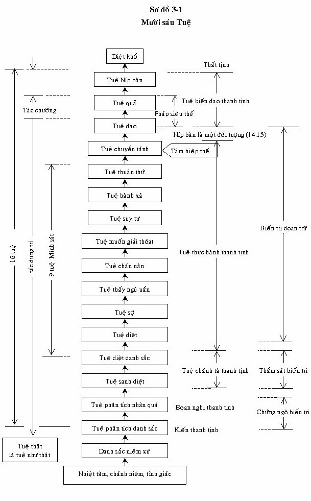
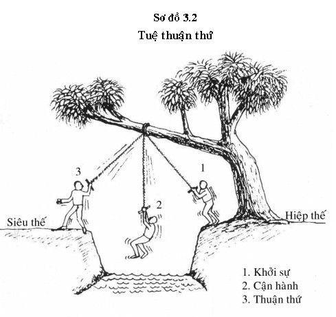

|
Giáo trình Thiền
Minh Sát Tuệ Tác giả: Thiền Sư Achaan
Naeb
Phần III KẾT QUẢ Khi bậc thánh (Ariyan) dứt bỏ vòng sinh tử, đoạn trừ tất cả những tham ái, dòng lũ tham ái đã khô cạn, vòng sinh tử đã ngừng lại. Ðây là sự chấm dứt khổ, Níp bàn -- (Tiểu Bộ Kinh)  MƯỜI SÁU TUỆ (Ñaṇa, Yana) [1] 1. Tuệ phân tích Danh Sắc (Nāma-rūpa-pariccheda ñāṇa) Ðây là trí tuệ mà hành giả nhận ra Thực tướng pháp (sabhava - dhammma). Sabhava là bản chất thật của danh và sắc. Trí tuệ này thay đổi tà kiến cho rằng danh sắc là "ngã". Loại trí tuệ này hành giả khó lòng bắt kịp trong khoảnh khắc hiện tại, bởi vì Phiền não (Kilesa) cho rằng danh sắc là "Tôi" đã tồn tại lâu đời. Hành giả nào muốn đạt được tuệ này phải tuân theo sự tu tập đúng đắn của Satipaṭṭhāna (Tứ niệm xứ), được Ðức Thế Tôn giảng trong Kinh Maha-Satipaṭṭhāna (Ðại niệm xứ). Một hành giả muốn thành công phải nắm bắt được danh sắc liên tục trong khoảnh khắc hiện tại, với trí văn (cinta) cho đến khi chánh niệm, tỉnh giác và có trí tuệ mạnh mẽ. Sau đó chánh kiến sẽ xuất hiện. Ví dụ, khi chánh kiến xuất hiện, hành giả sẽ biết trong khoảnh khắc hiện tại danh sắc nào đang được quan sát (oai nghi ngồi, tâm nhĩ thức v.v...) - và vị này sẽ nhận thức rằng đó là danh pháp mà nó biết rằng nó là oai nghi ngồi, v.v... Và, xa hơn nữa, vị này sẽ biết rằng mọi vật trong thế gian là danh và sắc - không có đàn ông, đàn bà, ngã hoặc linh hồn - và bây giờ hành giả sẽ biết điều này, thậm chí trong cái tâm sâu kín nhất của hành giả. Khi tà kiến bị đoạn diệt về "cái ngã", hành giả sẽ cảm thấy vô cùng sợ hãi, bởi vì kể từ khi được sinh ra đời, vị này chưa từng có cái cảm nghĩ về sự việc không có "cái tôi" hoặc "cái ngã". Bởi vì tuệ quán rất mạnh mẽ (Thiền Minh Sát - trí tuệ) đến nỗi đoạn diệt toàn bộ phiền não ra khỏi cảm nghĩ của vị này, bây giờ hành giả có thể nhận thức được bản chất thật của danh sắc. Hành giả (yogi) sẽ tự mình đạt đến sự hiểu biết rõ tuệ này. Nó giống như hương vị đường - Người ta không cần phải dạy cho hành giả hương vị nó là thế nào. Trong Tương Ưng Kinh (Anguttara-Nikāya) đức Phật dạy về giáo pháp là: "paccattanveditabbho viññuhi" (người trí cảm nhận trực tiếp). Giáo pháp không cần đến một vị thầy để giải thích rằng hành giả đạt đến một trí tuệ nào đó - Hành giả sẽ tự mình biết được chính cảm nhận này. Ðôi lúc hành giả sẽ nghĩ rằng mình đã đạt đến một tuệ nào đó, nhưng thật sự không hoàn toàn chắc chắn lắm. Nếu một người không chắc chắn, thì hành giả đó có thể hoàn toàn chưa đạt được tuệ đó. Tuệ này được gọi là Kiến thanh tịnh (Diṭṭhi-visudhi) vì vào khoảnh khắc nhận thức, hoàn toàn không có phiền não. Nhưng chánh kiến này chưa nhận thức được tam tướng, hành giả cần phải tu tập nhiều hơn để thấy được vô thường, khổ và vô ngã. Tuệ này (tuệ thứ nhất) trở thành nơi "nương dựa" của hành giả, bởi vị này nhận ra được bản chất thật của vạn vật mà vị này biết được bằng cách nếm, khi vị này dùng đường. Vị này biết được nó vì đã tự mình nếm, ăn nó. Kể từ bây giờ hành giả biết "mình" không ngồi, mà chính là oai nghi ngồi, "mình" không thấy, "nhãn thức" v.v... - và xa hơn nữa, vị này biết rằng mọi chúng sinh, vị này chỉ thấy danh và sắc. Từ điểm chủ yếu này, danh sắc trở thành vị thầy của hành giả. 2. Tuệ phân tích nhân quả (Paccaya-parigaha-ñāṇa) Khi hành giả nhận thức được tuệ thứ nhất, nếu vị này vẫn còn đang quan sát danh sắc trong khoảnh khắc hiện tại, vị này sẽ nhận ra nhiều danh sắc và sự quan sát sẽ không có lẫn lộn 2 thứ với nhau. Ví dụ, khi oai nghi ngồi có sự đau đớn thì vị này nhận biết về nó, vị này biết oai nghi ngồi là khổ, nhưng không thấy khổ như là thọ danh (Nāma-vedanā). Nhưng bây giờ hành giả thấy rằng sắc pháp là khổ và danh thọ biết được sắc pháp là khổ. Như vậy ở tuệ này, vị này thấy rằng cả danh sắc, cả hai đều tồn tại từ nhân và mỗi phần đều dựa vào duyên (paccaya). Ðối với danh pháp có chức năng, nó phải có tâm cơ, căn môn và đối tượng để biết. Ngược lại, sắc pháp dựa vào danh pháp với chức năng đi, cử động v.v... Khi hành giả nhận thức trong hiện tại cho rằng danh sắc tồn tại từ nhân, và dựa vào nhau, vị này nhận thức rằng danh sắc không do thần thánh hoặc sức mạnh siêu nhiên nào tạo nên (iddhi). Danh sắc trong hiện tại thực tế được tạo nên từ các nhân ở quá khứ: vô minh (avijjha), tham ái (Taṇhā), chấp thủ (uppadana), và Nghiệp. Và chúng cần thực phẩm để sống. Khi hành giả nhận thức bằng trí tuệ rằng đây là đúng thật trong hiện tại, vị này sẽ nhận ra rằng đây là duyên (paccaya) là đúng thật trong quá khứ, và sẽ đúng thật trong tương lai. Với sự nhận thức vị này (mình) được sinh ra bằng tính cách này trong hiện tại, (được tạo nên từ nhân) sau đó vị này không còn nghi ngờ rằng mình đã được tạo nên bằng tính cách này trong quá khứ, và sẽ còn ở trong tương lai. Trong thất tịnh, tuệ thứ hai này được gọi là Kankhavitarana visuddhi có nghĩa là "chánh kiến không có phiền não của hoài nghi" ở tuệ này hành giả cảm thấy thanh thản, bởi vì vị này chắc chắn rằng mình sẽ được sanh một cảnh giới an vui (sugati), nếu vị này lìa đời. Một người nhận thức được điều này được gọi là Culla Sotāpanna (tiểu Tu-đà-hườn) 3. Tuệ suy xét thấy danh sắc vô thường, khổ, vô ngã (Sammasa-ñāṇa) Ở tuệ trước đó, người hành giả chỉ nhận thức được nhân (sự phát sinh) của danh sắc, nhưng không phải là sự biến mất - bởi vì sự sanh diệt liên tục của danh sắc. Vào thời điểm này, trí tuệ của hành giả vẫn còn yếu kém. Nếu hành giả tiếp tục nhận xét danh sắc thường xuyên trong khoảnh khắc hiện tại, không bao lâu vị này sẽ thấy sự biến mất hoặc sự hoại diệt của danh sắc. Nhưng trí tuệ này vẫn không đủ mạnh mẽ để thấy được sự phân chia của santati (sự liên tục). Ví dụ, khi ngồi, và sau đó có một sự chuyển đổi sang đứng, hành giả sẽ thấy được sự biến mất của tư thế cũ (ngồi). Nhưng khi hành giả đang ngồi trong khoảnh khắc hiện tại, vị này không thấy được sự sinh và diệt, vì trí tuệ của vị này chưa đủ sức mạnh. Tuy thế, hành giả này có thể nhận thấy được tam tướng trong danh sắc. Ðiều này vẫn không đúng thật trong khoảnh khắc hiện tại; điều này chỉ xảy ra khi đến tuệ thứ tư. Quyển kinh Thanh tịnh đạo gọi đây là Tiranaparina. Trong thất tịnh, tuệ này được gọi tên là Maggamagga ñāṇadassana visuddhi - có nghĩa là sự trong sạch của tri kiến và quan kiến về đạo và phi đạo", sau đó tuệ này dẫn đến con đường chánh đạo - nghĩa là tuệ kế tiếp. 4. Tuệ sinh và diệt (Udayabbaya-ñāṇa) Ðây là trí tuệ nhận thức được sự sinh và diệt của danh sắc, và santati (ảo tưởng liên tục) bây giờ được chia danh sắc - trong thiền quán (Thiền Minh Sát) ở khoảnh khắc hiện tại. Vào giai đoạn trí tuệ này, hành giả thấy danh sắc sinh và diệt cùng một lúc. Thực tế, theo lời đức Phật, danh pháp sinh và diệt nhanh hơn sắc pháp gấp 17 lần - nhưng hành giả không đủ nhanh để nhận thức được sự kiện này. Vị này chỉ thấy hai phần này (danh sắc) cùng nhau sinh và diệt. Tuệ này trông thấy rõ tam tướng trong danh sắc, và nó có thể đoạn diệt phiền não giấu mình trong danh pháp (tâm) đó là tham ái, ngã chấp (ảo tưởng về "cái Tôi", cái ngã), tà kiến và Vipallāsa (nhận thức sai lệch). Tuệ này mách bảo cho hành giả đang ở trên con đường chánh đạo hay không phải. Nếu con đường tiến triển là đúng đắn nó dẫn đến Níp bàn. Sự hiểu biết về con đường đúng đắn là tuệ minh sát (Vipassanā). Nếu không phải là con đường đúng thật sẽ có phiền não của tuệ minh sát - mười hình thức của những phiền não này được gọi là phiền não Minh sát- vipassanupakilesa (Xem những đoạn tiếp theo tuệ này với phiền não tuệ minh sát trong tuệ thứ tư). Nếu phiền não minh sát còn tồn tại, có nghĩa là sự trong sạch của hành giả không đủ để khám phá được phiền não - vì phiền não thì rất nhiều và trí tuệ yếu kém nên không thể tìm thấy được . Phiền não khiến cho định và tuệ minh sát của hành giả biến mất, nơi đây hành giả bị dính mắc vào nhiều hiện tượng khác nhau, mà vị này thường nhầm lẫn cho là Níp bàn. Hiện tượng này bao gồm những loại ánh sáng rực rỡ; phỉ lạc (pìti), và sự vắng lặng thật sâu lắng. Những hành giả đã từng tham thiền trong quá khứ và đã phát triển quá nhiều định, sẽ nhận thấy rằng nếu định được cho phép trở lại, nó sẽ là một trở ngại lớn lao đối với tuệ minh sát -Thiền Minh Sát. Có quá nhiều lòng tin - saddha và quá nhiều tin tấn cũng có thể là một trở ngại. Mười phiền não này có thể hết sức cám dỗ, do đó hành giả sẽ thường xuyên bị cuốn hút vào chúng, và cho rằng họ đang đắm mình trong cõi níp bàn, thậm chí sẽ không tin lời vị thầy của mình khi bảo cho họ đó là không phải như vậy. Nếu hành giả không thể vượt khỏi những phiền não này, hành giả không thể tiếp tục đi lên những giai đoạn tuệ giác cao hơn. Sự trong sạch của tri kiến và quan kiến về sự tiến triển của con đường. Ðây là tuệ giác xuất hiện trong tuệ này (thứ tư), nếu hành giả tu tập đúng cách. Nó được gọi như thế, bởi vì nó là con đường đúng đắn nhưng bị lẫn lộn với phiền não, tham ái và ảo tưởng (moha). Tất cả ba đặc tính này [2] đều bao gồm trong tuệ này - vì thế nó rất quan trọng. Khi hành giả đến được con đường đúng đắn trong tuệ này sẽ trông thấy rõ ràng ba đặc tính. Hành giả càng đạt được nhiều trí tuệ thì càng đoạn diệt "phiền não". Khi sắc pháp được quan sát và trở nên rõ ràng, hành giả sẽ tự mình thấy được danh pháp . Những phiền não của Tuệ minh sát (Vipassanupa kilesa). Như đã được lưu ý trước đây, có mười phiền não của tuệ minh sát: 1. Sự tỏa sáng (Obhāsa). Khi hành giả thấy được những ánh sáng rực rõ, vị này có thể nghĩ rằng mình đã đạt Níp bàn, và vì thế tỏ ra thỏa mãn với trạng thái này, khiến cho tham ái phát sinh. Ðây là tà kiến, Chính cái ngã của vị này suy nghĩ rằng mình đã đạt được níp bàn. 2. Tuệ. Một số hành giả tinh thông giáo pháp, sẽ luôn luôn nghĩ về nó, và điều này sẽ đẩy họ ra khỏi khoảnh khắc hiện tại. 3. Hỉ lạc (Piti) vì hành giả có quá nhiều định, vị này cảm thấy hỉ lạc, đây là phiền não. Khi tu tập thiền quán không một ai có thể có được hỉ lạc, bởi vì sự nhận thưc ba đặc tính không dẫn đến một cảm giác thỏa thích. 4. Vắng lặng - An lạc (Passaddhi). Ðôi khi có một trạng thái an lạc sẽ phát sinh; điều này cũng xuất phát từ việc có quá nhiều định. Hành giả không thể nhận thức được ba đặc tính cùng với sự an lạc, và trí tuệ không thể phát triển được. 5. Hạnh phúc (Sukkha). Có một cảm giác hạnh phúc khi có quá nhiều định. Khi hạnh phúc xuất hiện, hành giả không thể nhận ra khổ. 6. Tinh cần (Adhimokkha). Ðiều này khiến cho hành giả tin tưởng sai lạc rằng mình đã chứng ngộ níp bàn, và ngay cả không tin tưởng nơi vị thầy của mình, khi được dạy dỗ trái ngược lại. Ðây là nguyên nhân quá nhiều tín (sadha) quá ít trí tuệ, (thông thường trí tuệ và đức tin bằng nhau). 7. Sự ráng sức (Pakkaha). Có quá nhiều sự nỗ lực hoặc kiên trì cũng có thể khiến cho hành giả mệt mỏi, Tâm của vị này không rõ ràng, và vẩn vơ. Thông thường, sự kiên trì và sự tập trung phải tương đồng. Quá nhiều sự kiên trì dẫn đến "vẩn vơ", và tập trung quá mức (sati) sẽ khiến cho hành giả dừng lại sự tu tập... 8. Chánh niệm quá mức (Uppathana). Có quá nhiều chánh niệm có thể dẫn đến định quá mức và hành giả sẽ thấy nhiều nimita (ấn chứng xuất hiện trước mắt). Sau đó vị này sẽ mất đi danh sắc là các đối tượng - nghĩa là hành giả sẽ xa rời khoảnh khắc hiện tại, và không thể tiếp tục. 9. Xả (Uppekha). Ðôi khi tâm xả quá mạnh sẽ phát sinh, và hành giả tin tưởng sai lầm tin tưởng rằng mình không có phiền não - nó đã được đoạn diệt bởi Níp bàn: nhưng hành giả vẫn có phiền não của tà kiến, tham và sân chỉ đi qua tạm thời. Trong giai đoạn này hành giả không thể tiếp tục tu tập. 10. Thỏa thích (Nikanti). Hành giả trở nên thỏa thích với tất cả phiền não minh sát, và thỏa mãn khi ở lại với trạng thái này. Và vì thế vị này không thể tiếp tục tu tập. Phiền não minh sát là phiền não của thiền quán và xảy ra vì quá nhiều định; điều này khiến cho hành giả có tà kiến là mình đã đạt đến một trạng thái không có phiền não, hoặc đã đạt được Níp bàn. Bởi vì cảm giác này, vị này nghĩ "Tôi" đã đạt Níp bàn và cảm nghĩ này không trong sạch, vì nó tu tập với "cái Tôi" trong tâm (Ðây không phải thiền quán vì thiền quán không tu tập với "cái Tôi"). Ðối với thiền định cảm nghĩ này là tốt nhưng đối với thiền quán thì không. Thiền định đòi hỏi định mạnh mẽ, sâu lắng, nhưng thiền quán thì không, bởi vì thiền định cổ vũ ấn chứng- nimita. Phiền não minh sát sẽ không xảy ra đối với ba loại hành giả: 1. Một hành giả không tu tập thiền quán đúng cách. Ở trường hợp này những phiền não phát sinh không thể gọi là những phiền não của tuệ minh sát. 2. Một người có sự kiên trì yếu ớt (với sự kiên trì yếu ớt, định sâu lắng sẽ không xuất hiện). 3. Người này là bậc thánh (ariya) và biết con đường đúng đắn (chính đạo). Khi hành giả đoạn trừ phiền não, không bao lâu vị này sẽ thấy được sự sanh diệt của danh sắc rất rõ ràng. Trong thất tịnh,tuệ thứ tư này cho đến tuệ thứ 11 (anulomana) được gọi là Patipadana Nadassana Visuddhi - tuệ kiến chánh đạo thực hành thanh tịnh. 5. Tuệ diệt (BhangaAnupassanā-ñāṇa) Tuệ này là trí tuệ thấy được sự sanh và diệt của danh sắc. Người hành giả thấy sự phân hủy của 5 uẩn, cả phía trong (tâm) và phía ngoài (đối tượng). Ví dụ, hành giả đang nhận thức được "oai nghi ngồi đang hoại diệt và "tâm" biết được "oai nghi ngồi" cũng đang hoại diệt. Hiện tượng này chưa được hành giả nhận thấy trước đây, và khiến cho vị này có một cảm giác sợ hãi. Trí tuệ này mạnh mẽ đủ sức loại trừ tận gốc moha (tà kiến) với nhiệt tâm, chánh niệm và tỉnh giác. Cảm nghĩ về sự hoại diệt quá mạnh mẽ đến nỗi hành giả chỉ tập trung về nó, và không chú tâm đến sự sinh. Trí tuệ này thấy được sự diệt của danh sắc mang lại một nỗi sợ hãi tác động với ; bởi vì vị này nhận thức rằng mọi vật trong thế gian là mong manh, và biến mất ở khoảnh khắc nó xuất hiện. Trí tuệ của tuệ này khi hành giả đạt được sẽ tiêu diệt Vipallāsa (sự nhận thức sai lệch) - loại này được gọi là nicca Vipallāsa, sự nhận thức sai lệch cho là thân và tâm là trường tồn. Khi hành giả đạt được trí tuệ này, và cảm thấy rằng đây là sự tu tập đúng đắn, và không muốn thực hành sự tu tập sai lệch. Tuệ này là bước đầu tiên của sự đoạn diệt (Pahana - Parinna) của phiền não (xem sơ đồ 3.1) tiếp tục cho đến tuệ cuối cùng (tuệ đạo). Phiền não đang bắt đầu bị loại trừ, Phiền não là một thành phần đã được ngấm sâu qua nhiều giai đoạn suốt tiến trình luân hồi- samsara-vata. Có 7 lợi ích với tuệ này: 1. Nhận thức rằng không có hạnh phúc nào ở trong sự hiện hữu tương lai. 2. Thấy rằng không có hạnh phúc trong đời sống này, bởi vì hành giả nhận thức rằng đời sống này là khổ. 3. Sự phát huy một lòng ham muốn mạnh mẽ để diệt khổ. 4. Trong trường hợp của một nhà sư, dẫn đến một ham muốn có những vật dụng đơn giản. 5. Cũng giúp cho nhà sư một ham muốn mạnh mẽ để tuân theo Vinaya (Giới luật). 6. Tạo cho những ai đạt được tuệ này không thể phá vỡ các giới luật. 7. Hành giả trở nên dễ dàng bằng lòng với điều kiện nhu cầu, nếu bị kích động thì ít bị nổi giận, kiên nhẫn với những phiền não của người khác, không bị khó chịu với những sự quấy rầy, chẳng hạn như tiếng ồn... 6. Tuệ sợ hãi (Bhayatupatthana-ñāṇa) Trong tuệ này, hành giả có trí tuệ nhận thức được danh sắc là nguy hại. Vì sự phân hủy đã được hành giả nhìn thấy trong tuệ thứ 5, cảm nghĩ phát sinh cho rằng danh sắc là mong manh luôn luôn sinh và diệt mau chóng - và điều này khiến cho hành giả sợ hãi và ghê sợ trong lòng. Hành giả không thấy hạnh phúc trong danh sắc, và ngay cả được sinh ra ở bất cứ bhava (Hữu, sự trở thành) trong tương lai đều đựoc xem là ghê sợ - như nó đã có trong quá khứ. Tuệ này khiến cho lòng tham ái bị ngưng lại, nhưng không hoàn toàn đoạn diệt được nó. Trí tuệ này là kẻ thù của tham ái, nhưng điều đó giống thoa một loại thuốc trên lớp da bị ngứa, và khi thuốc hết tác dụng, da bắt đầu ngứa trở lại. 7. Tuệ thấy tội của ngũ uẩn (Adinava-ñāṇa) Khi hành giả nhận ra tuệ thứ sáu (sự sợ hãi), nó dẫn đến tuệ này, xem danh sắc là nguồn gốc của sự nguy hại và hiểm nghèo. Từ tuệ minh sát thứ nhất đến tuệ này, từ tuệ này dẫn đến tuệ kế tiếp, và mỗi cảm nghĩ càng mạnh mẽ hơn. Hành giả nhận thức danh sắc là nguy hại, và cảm thấy rằng không có danh sắc là điều tốt đẹp. Năm điều nguy hại. 1. Danh sắc đều ở trong tất cả ba thế giới (dục giới [3] sắc giới và vô sắc giới) xuất hiện như thể chúng ở trong một cái hố bị lửa bao bọc xung quanh. 2. Hành giả đã nhận ra danh sắc ở bất cứ sự trở thành (hữu) nào, bị bao bọc bởi 11 ngọn lửa. 11 ngọn lửa sanh, tử, hoại diệt, đau khổ v..v.. (Xem 11 cái khổ của Ðế thứ nhất (tập đế) 1.4.4.2) Hành giả cảm thấy danh sắc thì rất nguy hại, và là nguồn gốc của khổ đau. 3. Hành giả nhận thấy rằng nhân của danh sắc là vô minh, và vô minh đó thì nguy hại, bởi vì nó chỉ dẫn đến sinh, tử, già, chết. 4. Hành giả nhận thấy rằng danh sắc thìø đang phân hủy và hoại diệt từng khoảnh khắc (sát na), và như thế là nguy hại. 5. Hành giả nhận thức rằng sự tái sinh trong vòng luân hồi là nguy hại và hiểm nghèo - bởi vì danh sắc là nguồn gốc của khổ và bất cứ hiện hữu nào, và có thể dẫn đến nỗi thống khổ trở lại. Khi hành giả nhận thức được 5 sự kiện nguy hại này thì cũng nhận ra những lợi ích từ đây. Những gì được nhận thấy ở đây là: 1. Chẳng có điều gì khi được tái sinh là hạnh phúc, và một nơi không có danh sắc sẽ là điều khát khao của hành giả. 2. Nếu không có sự tái sinh ở bất cứ sự trưởng thành nào, sẽ có hạnh phúc, và điều này sẽø dẫn đến con đường tới Níp bàn. 3. Nếu không có nhân (Samudaya) để tạo thêm danh sắc nữa, sẽ thoát khỏi khổ. 4. Không có danh sắc để phân hủy ở bất cứ sự trưởng thành hữu nào, đó sẽ là một nơi an lạc (Nibbāna) 5. Không còn tái sinh vào vòng luân hồi, đó là lợi ích và nguồn của hạnh phúc. Trong tuệ này, hành giả nhận thức rằng danh sắc hoặc 5 uẩn, là thực tướng pháp (không có đàn ông, đàn bà) và thực tướng pháp là một trạng thái nguy hại. Tuệ này cũng có một trí tuệ mạnh mẽ để ngăn chặn Dục ái (Taṇhā Vipallāsa) sự nhận thức sai lệch trong tâm. Nhận biết của tuệ này là kẻ thù của tham ái, và nó làm cho ái dục khó thực hiện chức năng; ái dục không có nơi để tạm trú trong tư tưởng, bởi vì toàn bộ thế giới (Ngũ Uẩn) được xem là nguy hại, hiểm nghèo và không có hạnh phúc. Trong tuệ này, người hành giả không còn thấy sati (Chánh niệm) là tốt đẹp, nhưng chỉ là một điều gì đó có Tam Tướng (vô thường, khổ và vô ngã) - nhưng chánh niệm tiếp tục chức năng. Ngay cả khi hành giả thấy được trí tuệ, đều không có sự ham muốn hoặc không ham muốn. Ðiều này vì không có tham ái và tà kiến để tạo cho hành giả thích chánh niệm và trí tuệ. Cái tâm sắp sửa đạt Níp bàn phải tu tập cho đến khi nó đạt được cảm giác (ái dục là kẻ thù), và sau đó tâm sẽ tách ra khỏi vòng luân hồi và đạt được đạo quả níp bàn. Về một mặt khác, nếu hành giả nghĩ rằng danh sắc là tốt đẹp, trường tồn và hạnh phúc, như vậy tâm không tách rời khỏi vòng luân hồi và tiếp tục đạt đến Níp bàn và diệt khổ. Tâm đã nhận thức được khổ, và trí tuệ nhận ra được khổ sẽ đưa vị này đến Níp bàn. Hành giả không thể chứng ngộ Níp bàn bằng sự tập trung, bởi vì định sẽ tạo ra sự an lạc (sukhaVipallāsa) ý nghĩ cho rằng 5 uẩn là hạnh phúc, và vị này không thể thấy được chân lý, danh sắc là nguy hại. 8. Tuệ chán ghét (Nibbidā-ñāṇa) Ở từng tuệ, trí tuệ càng trở nên mạnh mẽ. Ở tuệ này, một cảm giác chán ghét danh sắc, 5 uẩn, là một kết quả của tuệ trước đó (thứ bảy). Không có sân trong sự chán ghét, chỉ có trí tuệ. Ðiều này xảy ra vì có một nỗi ham muốn không tái sinh trở lại ở bất cứ hiện hữu nào, thậm chí trong một trạng thái cao nhất - một nhà vua, một triệu phú. Nó giống như một người đến hai con đường: Con đường tối tăm là tái sinh trong vòng luân hồi và con đường trong sáng là an toàn và yên ổn của Níp bàn. Do đó ghê sợ danh sắc, hành giả không thấy có hạnh phúc, an lạc trong con đường tối tăm, và con đường trong sáng dẫn đến Níp bàn dường như lộ rõ. Trí tuệ này xuất phát từ việc thoát khỏi tham ái, và được gọi là tuệ Níp bàn - Nibbidāyana. Nếu sự thoát khỏi hoàn toàn với tham ái, nó được gọi là Viraga (không còn ham muốn, không còn chấp thủ). Ðiều này dẫn sự giải thoát (Vimutti). Sự giải thoát dẫn đến Níp bàn. Trí tuệ đạt đến tuệ này sẽ nhận thức được ít nhất một trong ba tam tướng: Vô thường, khổ và vô ngã. Nếu sự ghê sợ cảm thấy có sân, nó không phải là tuệ Níp bàn, vì loại chán ghét này không thể thấy được tam tướng. Những ai tu tập thiền quán nhận thấy thoát khỏi vòng luân hồi, nếu vị này đạt được tuệ này, tất cả phiền não, thậm chí rất mạnh mẽ, sẽ bị loại trừ. Từ tuệ này, trạng thái tâm-Vīthicitta [4] dẫn đến con đường Níp bàn. Sự chán ghét, hành giả cảm nhận trong tuệ này được tóm tắt trong câu kệ Pháp Cú (dhammapada):
Tất cả mọi vật hiện hữu đều vô thường. 9. Tuệ ham muốn Giải Thoát (Munacittukammayata-ñāṇa) Ở tuệ thứ bảy, hành giảnhận thức được sự nguy hại, và sự chán ghét ở tuệ thứ 8, người thiền giả trở nên hết sức ham muốn thoát khỏi danh sắc. Giống như một người ở tù mong ngóng từng giây phút để thoát ra ngoài. Những tuệ thứ 6, thứ 7 và thứ 8 đều có liên hệ với từng cái, càng trở nên mạnh mẽ hơn. Tuệ biết sự sợ hãi dẫn đến tuệ biết sự nguy hại, tuệ biết sự nguy hại dẫn đến tuệ biết sự chán ghét - rồi sau đó dẫn đến tuệ ham muốn giải thoát. Sau đó tuệ thứ chín dẫn đến Níp bàn. Ham muốn được giải thoát dẫn đến sự năng nỗ tu tập hơn để đạt được Níp bàn. 10. Tuệ Suy tư (Patisankha-ñāṇa) Ở những tuệ trước, về sợ hãi, nguy hại, và chán ghét dẫn đến một sự ham muốn thoát khỏi danh sắc (tuệ thứ 9). Ở tuệ này, hành giả bị thúc đẩy ham muốn thoát khỏi danh sắc, Hành giả [5] cố gắng tìm một phương cách để thoát khỏi - nhưng không biết phương cách nào. Sau khi đã nhận ra được tam tướng ở danh sắc hành giả có cảm tưởng mạnh mẽ để vượt khỏi chúng. Nhân của lòng ham muốn để vượt khỏi từ các tuệ 7, 8 và 9 đã hợp lại với nhau tạo nên trí tuệ rất rõ ràng, mạnh mẽ và khát khao loại trừ phiền não, và cố tìm một con đường giải thoát: một con đường chấm dứt vòng sanh tử dường như sẽ trải dài trong tương lai. Ở tuệ này, hành giả thường thấy rõ tam tướng nhiều hơn ở các tuệ trước. Sau khi đã nhận thấy được danh sắc là vô thường, khổ và vô ngã, hành giả có một nỗi khát khao diệt khổ này. (Ðức Phật dạy rằng chỉ có Tam Tướng mới có thể đưa con người thoát khổ. Một hành giả chưa bao giờ thấy được Tam Tướng không thể vượt khỏi vòng luân hồi. Chỉ có một con đường duy nhất dẫn đến Níp bàn, và để thấy rằng danh sắc là vô thường, khổ và vô ngã). 11. Tuệ Hành Xả (Sankhāra-upekkhā-ñāṇa) Trí tuệ này khiến không có sự quan tâm đến việc danh sắc (hành hoặc hành uẩn) phát triển; không còn bám víu và chấp thủ vào danh sắc - mà từ lâu chúng ta đã từng nghĩ là "Tôi", "Của tôi" "chính bản thân tôi". Nhưng sự lơ là kết hợp với sự chán ghét. Trí tuệ này, đã phát triển ở tuệ trước thì rất mạnh mẽ và nó giúp người ta nhận thức rõ rằng năm uẩn (hành) là mong manh: không phải đàn ông, một người, đàn bà, con chó v.v... và đời sống trở nên ngắn ngủi và người ta cũng sớm lìa đời không có hạnh phúc trong danh sắc. Khi tâm có trí tuệ nhận thức danh sắc là tính không (suññatā), không có đàn ông, đàn bà, nó không còn quan tâm đến danh sắc; tâm thấy thế giới cũng rỗng không. Như vậy tâm có được tâm xả - không thích hoặc thích danh sắc. Nhưng tâm xả với sự chán ghét. Bây giờ tâm muốn đạt Níp bàn. Nó không còn quan tâm đến danh sắc nữa. Nó không còn quan tâm để được tái sinh ở bất cứ tam giới nào (xem cõi, phần ghi chú ở tuệ thứ bảy). Trí tuệ của tuệ này là tuệ Minh sát cao nhất trong cõi thế tục. Trí tuệ này sẽ đưa hành giả đến tâm đạo (magga-citta) và tâm quả (phalacitta) và hành giả sẽ trở thành bậc thánh nhân (ariya-puggala) . Nó là một trí tuệ rất mạnh mẽ và có đoạn diệt hầu hết phiền não, bởi nó thấy Tam Tướng rất rõ. Ðiều này dẫn đến một ý chí mạnh mẽ (chanda) để đạt Níp bàn. Tuệ thứ chín (ham muốn giải thoát), tuệ thứ 10 (suy niệm về con đường giải thoát) và tuệ thứ 11 (hành xả) tất cả đều có mối liên kết, nhưng trí tuệ của tuệ thứ 11 thì mạnh mẽ hơn. Tâm có được tính xả ly đối với bất cứ một trong Tam Tướng được gọi là vimokkhamukha (tâm giải thoát). Nếu tâm được giải thoát đến Níp bàn bằng cách niệm vô thường (aniccaAnupassanā); nó được gọi là ấn chứng Níp bàn (animitta-Nibbàna). Nếu tâm được giải thoát đến Níp bàn bằng cách niệm khổ (dukkha-anupassanā); nó được gọi là appanihitta-nibbāna. Nếu tâm được giải thoát đến Níp bàn bằng cách vô ngã (anatta-anupassanā); nó được gọi là suññatā-nibbāna). 12. Tuệ thuận thứ (Anuloma-ñāṇa) Tuệ này giúp hành giả nhận ra Tứ Diệu Ðế, vì nó là trí tuệ rất hoàn hảo. Trí tuệ này xuất phát từ tuệ trước đó. Tuệ này là một tuệ rất mạnh mẽ: Nó có nhiều đức tin hơn, năng nổ hơn, chánh niệm hơn, và trí tuệ hơn các tuệ trước đó - vì nó nhận ra khổ đế và tập đế. Thuật ngữ trong Trợ đạo pháp (Bodhipakkhiya dhamma), tuệ giác này hoàn hảo ở mức độ của Bồ đề phần (Bojjhanga) [6] vì nó giúp cho việc nhận thức Tứ Diệu Ðế. Có ba bước trí tuệ trong Phật giáo (Xem Sơ đồ 3.1) - Tuệ thứ nhất và thứ 2: Tuệ biết đầy đủ - Yataparina - Tuệ thứ ba và thứ 4: Tuệ quan sát đầy đủ - Tiranaparina - Tuệ thứ 5 đến thứ 14: Tuệ từ bỏ đầy đủ - Pahanaparinna. Bổn phận phải thực hành Thiền Minh Sát khởi đầu từ tuệ thứ nhất và loại trừ phiền não từng bước, cho đến tuệ thứ 12 (Anulomañāṇa - Thuận thứ). Trí tuệ này vẫn còn Hiệp thế (lokiya) - nó có những chức năng Hiệp thế. Ở tuệ thuận thứ, hai đế đầu tiên khổ đế và tập đế đã được hành giả nhận ra, dùng tam tướng làm1 đối tượng. Danh sắc là một đối tượng kết thúc với tuệ này, và cũng là tuệ minh sát. Tuệ thuận thứ là trí tuệ đưa một trong Tam Tướng (danh sắc) để vượt qua lộ trình tâm (maggavitthi) (xem 3 đoạn cuối của tuệ thứ 11). Ðiều này chỉ xuất hiện trong ba sát na. Trí tuệ đối với tuệ thuận thứ đến từ tuệ hành xả (tuệ thứ 11). Tuệ thuận thứ (thứ 12) là một điều kiện hỗ trợ duyên (paccaya) của tuệ cắt đứt dòng phàm Gottarabhuñāṇa (thứ 13) Tiến trình vượt qua từ tuệ thuận thứ (12 đến tuệ cắt đứt dòng phàm (13) như sau:  Sự kiện này giống như việc đánh đu một sợi dây thừng qua một dòng nước. Sự bám chặt dây thừng là ở Parika amma (sự khởi đầu; tuệ thứ nhất của thuận thứ), chuẩn bị cho một người đến tâm đạo ; sự đánh đu chiếc dây thừng tiếp đến đưa người đó đến giữa dòng hoặc Upacāra (tuệ thứ hai), và sau đó tuệ thuận thứ đưa người đó lên bờ bên kia. Khi một người đáp xuống bờ xa hơn, tâm ở trong tuệ cắt đứt dòng phàm. Tâm bây giờ có đối tượng là Níp bàn. Tuệ thuận thứ là tuệ cuối cùng ở trong cõi dục giới (thế tục) - nghĩa là có danh sắc làm đối tượng. Kể từ bây giờ Níp bàn trở thành đối tượng. Theo tính cách mô tả trên, ở đó tâm dục giới (hiệp thế) đi đến siêu thế được gọi là dhammaniyana (định luật của chân lý hoặc nhân quả). 13. Tuệ cắt đứt dòng phàm (Gottarabhu-ñāṇa) Ðây là trí tuệ xuất hiện của maggavitthi là con đường của tâm dẫn đến tuệ đạo (tuệ thứ 14). Tuệ này khác biệt với các tuệ khác, ở đây có Níp bàn là đối tượng (siêu thế), tâm (citta) vẫn còn hiệp thế. Danh sắc đã được đoạn trừ, nhưng nó vẫn chưa hoàn toàn siêu thế (lokkutara). Trong tuệ trước, cả tâm lẫn đối tượng là siêu thế. Trí tuệ của Tâm (citta) trong tuệ này chuyển đổi hành giả từ kẻ Phàm phu (Puttujjana) sang bậc thánh cao quý (ariyapuggala). Ðây là tâm đầu tiên trong vòng luân hồi có Níp bàn là đối tượng. Mặc dù có Níp bàn là đối tượng, nhưng tuệ này không thể đoạn diệt hoàn toàn phiền não (Samuched). Thiền sư Ajha Naeb nói rằng tuệ này giống như người thợ tập sự mới bắt đầu công việc, người này hoàn toàn chưa quen thuộc với công việc của mình - và vì thế tuệ này không thể tiêu diệt phiền não hoàn toàn. 14. Tuệ đạo (Magga-ñāṇa) Ðây là trí tuệ xuất hiện ở trong tâm được gọi là tuệ đạo. Tuệ đạo đến từ, hoặc nhận được điều kiện hỗ trợ (duyên) của nó từ tuệ cắt dòng phàm (tuệ thứ 13). Tuệ này có Níp bàn làm đối tượng, giống như tuệ thứ 13. Nhưng tuệ này hoàn toàn tiêu diệt phiền não, lẫn tâm và đối tượng là siêu thế. Phiền não trong tuệ này hoàn toàn bị tiêu diệt bởi sức mạnh của tuệ đạo. Ðây là phần đầu tiên của bốn tâm đạo, dẫn đến Tu đà hườn hoặc bậc thánh Nhập Lưu- Sotāpanna [7] . Tâm đạo hoạt động chỉ trong một sát ma (citta-bhanda), nhưng nó giảm bớt sự tái sinh trong tương lai đến 7 kiếp (Sotāpanna). Tuệ này được gọi là Samma-Diṭṭhi (Chánh kiến) trong 8 chánh đạo: Chánh kiến của Tứ Diệu Ðế. Trí tuệ của tuệ này được so sánh với tia chớp trong một cơn sấm sét (Vachirapanna), vì nó rất mạnh mẽ, sáng rực và bất ngờ. Khi tâm đạo xuất hiện lần đầu tiên, nó gọi là tâm đạo Tu Ðà Huờn - Sotāpattimagga. Nó xuất hiện thêm 3 lần nữa cho những Ðạo cao hơn. Ðối với hành giả lần đầu tiên trở thành bậc thánh cao quý. Vị này không còn có thể tái sinh trong 4 đường ác đạo. Tuệ này là thiện pháp, tâm thiện siêu thế (lokkuttara kusala) Có trong 4 tuệ này:
1. Sotapatti-magga (Ðạo Tu Ðà Hườn) 15. Tuệ quả (Phala-ñāṇa) Trong thất tịnh, tuệ này là Nanadassana-visuddhi (tuệ tri kiến thanh tịnh). Khi tâm đạo xuất hiện, ở tuệ trước đó (thứ 14) và có Níp bàn làm đối tượng, nó tiêu diệt hoàn toàn phiền não-rồi sau đó, trong tuệ này, tâm quả phát sinh, và có một cảm giác an lạc rất sâu lắng. Kết quả này là dhamma niyama (định luật của chân lý hoặc nhân quả) - nghĩa là tâm quả luôn luôn đi theo tâm đạo. Khi tâm quả xuất hiện, đôi khi nó xảy ra trong ba hoặc hai sát na. Người hành giả nhanh hơn, với ba sát na, nhảy lên parikamma (xem Hình 3-1) và bắt đầu với cận định- upacāra, sau đó thuận thứ- anuloma, cắt đứt dòng phàm- Gottrabhu, tâm đạo, sau đó tâm quả, ba lần, thay vì 2 lần. Tâm quả là quả siêu thế từ tâm đạo. Nó chỉ xảy ra rồi diệt - nó không có chức năng. Sau khi nó biến mất, Níp bàn không còn là đối tượng. Trong tuệ quả, người hành giả trở thành bậc thánh lần thứ hai (lần thứ nhất ở trong tuệ đạo - thứ 14). Vị này bây giờ được gọi là bậc thánh Tu Ðà Hườn- (sotapatti-phala- pugala) và chắc chắn sẽ giác ngộ không quá bảy lần tái sinh nữa. Trong những giai đoạn Trí Tuệ, tuệ này hoàn toàn ở trong Kata-ñāṇa (giai đoạn tuệ giác thứ ba) 16. Tuệ Níp bàn (Paccavekkhana-ñāṇa) Trong tuệ này, hành giả xem xét 5 đề mục được nhận thức trong tuệ trước:
1. Tuệ đạo - Magga-ñāṇa (tuệ thứ 14) Tuệ này xuất phát từ tuệ quả (thứ 15) và trở về cõi Hiệp thế (lokiya). Vì Níp bàn không còn là đối tượng chúng ta trở về tâm Hiệp thế. Người nhận thức tuệ này ở trong tất cả ba giai đoạn đầu tiên của sự chứng đắc (Tu Ðà Huờn, Tư Ðà Hàm, A Na Hàm) được gọi là bậc thánh hữu học (Sakha-puggala) . Ở trong tuệ này (thứ 16) bậc A la hán chỉ suy xét bốn phần của các đề mục trên - bởi vì bậc thánh A La Hán không có phiền não. Không phải tất cả tuệ của bậc thánh hữu học đạt được giai đoạn này đều phải suy xét tất cả các đề mục trên. Một số vị, với trí tuệ mạnh mẽ, chỉ suy xét ba điều đầu tiên - và không suy xét đến toàn bộ phiền não. Trí tuệ của tuệ này thì khác biệt với tuệ thứ 14, 15, ở đây Níp bàn là đối tượng ở trong khoảnh khắc hiện tại, hành giả chỉ suy niệm, và không ở trong khoảnh khắc hiện tại. Tuệ trước đó có thể so sánh với nếm muối, trong lúc đó tuệ này giống như việc xem xét vị của muối như thế nào. Do đó, tuệ này không phải là tâm siêu thế, nhưng là tâm Hiệp thế. Mặc dù đây là trí tuệ hiệp thế, Thất tịnh phân loại nó là tuệ tri kiến thanh tịnh-Nanadassana-Visuddhi, cũng là sự phân loại cho rằng tuệ 14 và 15 là siêu thế. Vì tuệ này xuất phát từ tuệ thứ 14, 15. Ghi nhớ: 1. Ở sự chứng đắc đầu tiên, tuệ thứ 14 được gọi là tuệ cắt đứt dòng phàm, vì hành giả thay đổi từ phàm phu-Puthujjana sang bậc thánh nhân -ariyapuggula, nhưng trong sự chứng đắc tiếp theo (Tư Ðà Hàm v.v...) tuệ này được gọi là tuệ cắt đứt dòng phàm - Vodana-ñāṇa, vì ở trường hợp này, người chứng đắc đã là bậc thánh rồi. Nhưng lộ trình tâm (Vīthicitta) thì giống như nhau ở mỗi sự chứng đắc. 2. Những tuệ từ 1 đến 12 là hiệp thế; tuệ thứ 13 là chuyển tiếp: một phần hiệp thế và một phần siêu thế: 14 và 15 là siêu thế ï; trong khi đó tuệ thứ 16 trở lại hiệp thế . 3. Có 10 sự ràng buộc (kiết sử) trói buộc một người đi tái sinh. Chúng là:
1. Thân kiến a) Bậc thánh Tu Ðà Hườn (Sotapana): đoạn diệt ba sự ràng buộc đầu tiên. Bậc thánh Tu Ðà Hườn người nhập dòng thánh dẫn đến Níp Bàn. Vị này có thể trở lại đời sống này không quá 7 kiếp. Vị này chắc chắn không tái sinh ở cảnh giới thấp kém nào: địa ngục, súc sanh, ngạ quỷ, A tu la. b) Bậc Nhất Lai (Tư đà hàm - Sakadagami): hai sự ràng buộc thứ 4 và thứ 5 bị yếu đi. Vị này có thể trở lại đời sống này (cõi Dục) chỉ 1 lần. (Dục giới là cõi người và cõi trời). c) Bậc Bất Lai (Anagami): Tiêu diệt sự ràng buộc thứ tư và thứ 5. Vị này sẽ không tái sinh ở cõi dục giới d) Bậc A la hán loại trừ 5 sự ràng buộc cuối cùng. Vị này sẽ không còn tái sinh ở bất cứ cảnh giới nào. 4. Thất tịnh: - Tuệ thứ nhất - tuệ phân biệt Danh sắc (Nāma-rūpa paricheda-ñāṇa) là kiến thanh tịnh (Xem sơ đồ 3-1). - Tuệ thứ 2 - tuệ phân biệt danh sắc (paccaya-parigaha-ñāṇa), trong thất tịnh, là đoạn nghi thanh tịnh (Kankha-vitarana-visuddhi). - Các tuệ 3-4 là đạo phi đạo tri kiến thanh tịnh (magga-magga-ñāṇa-dassana-visuddhi). - Các tuệ 4 đến 13 là hành tri kiến thanh tịnh (patipadañāṇa - dassanavisuddhi). - Các tuệ 14-16 là tri kiến thanh tịnh (ñāṇa-dassana-visuddhi).
-ooOoo- [1] "Yana" là phát âm âm tiếng Thái của từ Pàli "Ñaṇa". Chúng ta chấp nhận "Yana", bởi vì ở đây người ta sử dụng nó rộng rãi và nó phát âm dễ dàng hơn. [2] Tam tướng trong tuệ quán thì khác biệt với sự miêu tả tục đế ở phần chú giải của chúng ta. Chúng gồm có: 1. "Mọi vật vô ngã, không có trung tâm; 2. Vô thường theo ý nghĩa không hiện hữu, không tồn tại; 3. Khổ đau theo ý nghĩa hoại diệt" (Buddhaghosa, Thanh Tịnh Ðạo, XX-84.) [3] Dục giới,thế giới này cộng với những cõi dục khác, sắc giới và vô sắc giới [4] Vīthicitta (lộ trình tâm) dẫn đến đoạn diệt là: Nibbidā - chán ghét, Viraga - không còn chấp thủ và Tadanga-nirodha - đoạn diệt những phiền não tạm thời . Một ví dụ về đoạn diệt những phiền não tạm thời ở trong tuệ đầu tiên, nơi đây tà kiến về ngã là được thay thế với chánh kiến. [5] Thuật ngữ "hành giả " đuợc sử dụng ở đây cho tiện lợi, nhưng thực ra chỉ có trí tuệ mới thực hiện- không có đàn ông, không có đàn bà, không có chúng sanh [6] Thất giác chi, xem phần 1.3.6 [7] Ba tâm đạo tiếp theo dẫn đến những trạng thái cao hơn: Tư Ðà hàm, A na hàm và A la hán. -ooOoo- Ðầu trang | Mục lục | 1.1 | 1.2 | 1.3 | 1.4 | 2.1 | 2.2 | 3.0 | 4.1 | 4.2 | 4.3 | 5.0 |
Chân thành cám ơn Tỳ kheo Thiện Minh đã gửi tặng bản vi tính (Bình Anson, 07-2003).
[Trở về
trang Thư Mục]
last updated: 28-08-2003